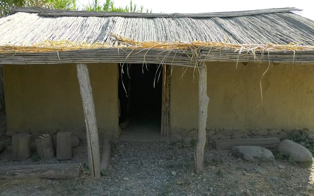

Inicio › Qué ver, provincia por provincia › Izmir
La guía Kültür Varlıkları reúne 43 lugares en Izmir: 20 yacimiento arqueológico, 18 museo, 4 castillo y edificio histórico, 1 edificio religioso. A continuación encontrará lo más destacado, un mapa y la lista completa.
⭐ Lo más destacado

1 · Izmir · Yacimiento arqueológicoAcrópolis de Pérgamo
La Acrópolis de Bergama fue el corazón político y cultural de Pérgamo, capital del reino helenístico de Pérgamo, construida sobre una colina empinada que se eleva…

2 · Izmir · Yacimiento arqueológicoÉfeso
Éfeso fue una de las mayores ciudades portuarias de la Antigüedad y uno de los centros más brillantes de la provincia romana de Asia; cerca se alzaba el templo de…

3 · Izmir · Yacimiento arqueológicoAsclepeion de Pérgamo
El Asclepeion de Pérgamo, dedicado al dios sanador Asclepio, fue uno de los centros terapéuticos más famosos del mundo antiguo.
🗺 En el mapa
📍 Todos los lugares (43)
Yacimiento arqueológico (20)
Acrópolis de PérgamoYacimiento arqueológico · UNESCOÉfesoYacimiento arqueológico · UNESCOAsclepeion de PérgamoYacimiento arqueológico · UNESCO Basílica Roja de BergamaYacimiento arqueológico · UNESCO
Basílica Roja de BergamaYacimiento arqueológico · UNESCO Yacimiento del Ágora de EsmirnaYacimiento arqueológico
Yacimiento del Ágora de EsmirnaYacimiento arqueológico Basílica de San Juan (Ayasuluk)Yacimiento arqueológico
Basílica de San Juan (Ayasuluk)Yacimiento arqueológico Casas del Ladera de ÉfesoYacimiento arqueológico
Casas del Ladera de ÉfesoYacimiento arqueológico Ciudad antigua de EritrasYacimiento arqueológico
Ciudad antigua de EritrasYacimiento arqueológico Antigua EsmirnaYacimiento arqueológico
Antigua EsmirnaYacimiento arqueológico Relieve rupestre de KarabelYacimiento arqueológico
Relieve rupestre de KarabelYacimiento arqueológico Yacimiento de ClarosYacimiento arqueológico
Yacimiento de ClarosYacimiento arqueológico Yacimiento de ClazómenasYacimiento arqueológico
Yacimiento de ClazómenasYacimiento arqueológico ColofónYacimiento arqueológico
ColofónYacimiento arqueológico Ciudad antigua de CimeYacimiento arqueológico
Ciudad antigua de CimeYacimiento arqueológico LébedosYacimiento arqueológico
LébedosYacimiento arqueológico Yacimiento de MetrópolisYacimiento arqueológico
Yacimiento de MetrópolisYacimiento arqueológico Ciudad antigua de NotionYacimiento arqueológico
Ciudad antigua de NotionYacimiento arqueológico Focea (Foça)Yacimiento arqueológico
Focea (Foça)Yacimiento arqueológico Yacimiento de TeosYacimiento arqueológico
Yacimiento de TeosYacimiento arqueológico
Yeşilova HöyükYacimiento arqueológicoMuseo (18)
 Museo de ÉfesoMuseo
Museo de ÉfesoMuseo Archivo y Museo de la Ciudad Ahmet PiriştinaMuseo
Archivo y Museo de la Ciudad Ahmet PiriştinaMuseo Centro de Arte ArkasMuseo
Centro de Arte ArkasMuseo Museo de BergamaMuseo
Museo de BergamaMuseo Mansión Çakırağa de BirgiMuseo
Mansión Çakırağa de BirgiMuseo Museo Arqueológico al Aire Libre de BostanlıMuseo
Museo Arqueológico al Aire Libre de BostanlıMuseo Key MuseumMuseo
Key MuseumMuseo Casa Memorial de Latife HanımMuseo
Casa Memorial de Latife HanımMuseo Museo de TireMuseo
Museo de TireMuseo Museo de Locomotoras de Vapor de ÇamlıkMuseo
Museo de Locomotoras de Vapor de ÇamlıkMuseo Museo de ÇeşmeMuseo
Museo de ÇeşmeMuseo Museo Arqueológico de IzmirMuseo
Museo Arqueológico de IzmirMuseo Museo Atatürk de IzmirMuseo
Museo Atatürk de IzmirMuseo Fábrica de Cultura y Arte de IzmirMuseo
Fábrica de Cultura y Arte de IzmirMuseo Museo de Pintura y Escultura de IzmirMuseoMuseo de la Experiencia de ÉfesoMuseoMuseo de Historia Natural de la Universidad del EgeoMuseoMuseo de ÖdemişMuseo
Museo de Pintura y Escultura de IzmirMuseoMuseo de la Experiencia de ÉfesoMuseoMuseo de Historia Natural de la Universidad del EgeoMuseoMuseo de ÖdemişMuseoCastillo y edificio histórico (4)
 Castillo de AyasulukCastillo y edificio histórico
Castillo de AyasulukCastillo y edificio histórico Kadifekale (monte Pagos)Castillo y edificio histórico
Kadifekale (monte Pagos)Castillo y edificio histórico Palacio de Ninfeo (Nif)Castillo y edificio histórico
Palacio de Ninfeo (Nif)Castillo y edificio histórico Aldea de ŞirinceCastillo y edificio histórico
Aldea de ŞirinceCastillo y edificio histórico